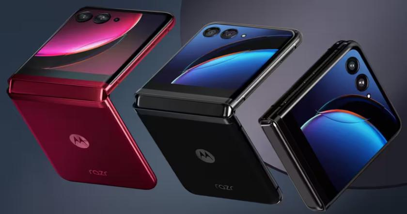

Motorola lança Razr 50 e Razr 50 Ultra: veja primeiras impressões
Postado em 25 de Junho de 2024 A Motorola anunciou nesta terça-feira (25) a sua nova geração de celulares dobráveis. Os novos Razr 50 e Razr 50 Ultra traz melhorias importantes: as telas são maiores, a dobradiça é mais firme e fica fixa em mais ângulos, a autonomia de bateria e desempenho ganharam um impulso. E, pela primeira vez nos seus dobráveis, a empresa traz uma câmera telefoto.
Leia maisEA FC 24 está disponível no Xbox Game Pass! Veja como jogar
Postado em 24 de Junho de 2024Após quase 30 anos de história, 2022 marcou uma mudança profunda em uma das franquias mais aclamadas dos videogames. Sim, o antigo FIFA precisou trocar de nome após conflitos de licenciamento entre a EA Sports e a Federação Internacional de Futebol. A boa notícia aqui, no entanto, é que EA Sports FC 24 já está disponível gratuitamente para os assinantes do Xbox Game Pass.
Leia maisIA pode permitir conversas com seu "eu" do futuro
Postado em 23 de Junho de 2024
Pesquisadores do Instituto de Tecnologia de Massachusetts (MIT) estão desenvolvendo um projeto digno de ficção científica. Utilizando inteligência artificial, eles criaram um chatbot que permitiria que você converse com o seu eu do futuro.
Leia maisRadeon RX 8000: AMD adiciona novo recurso às futuras placas de vídeo em patch do Linux
Postado em 22 de Junho de 2024
A AMD está preparando o terreno para o lançamento de sua próxima geração de placas de vídeo baseadas em RDNA 4, nova arquitetura que promete ganhos de desempenho e eficiência ao hardware. No último fim de semana, engenheiros de software da fabricante adicionaram novos patches relacionados à Radeon RX 8000 ao Linux.
Leia mais